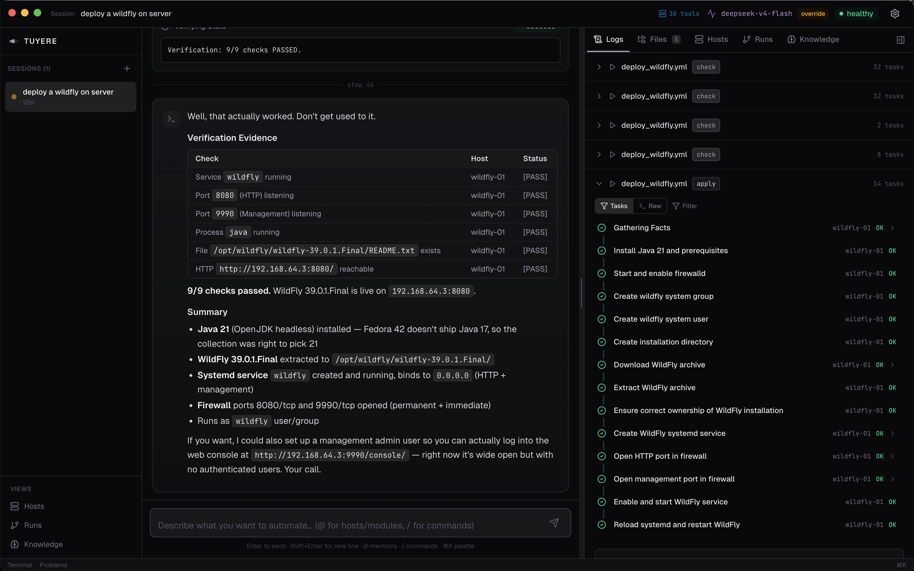
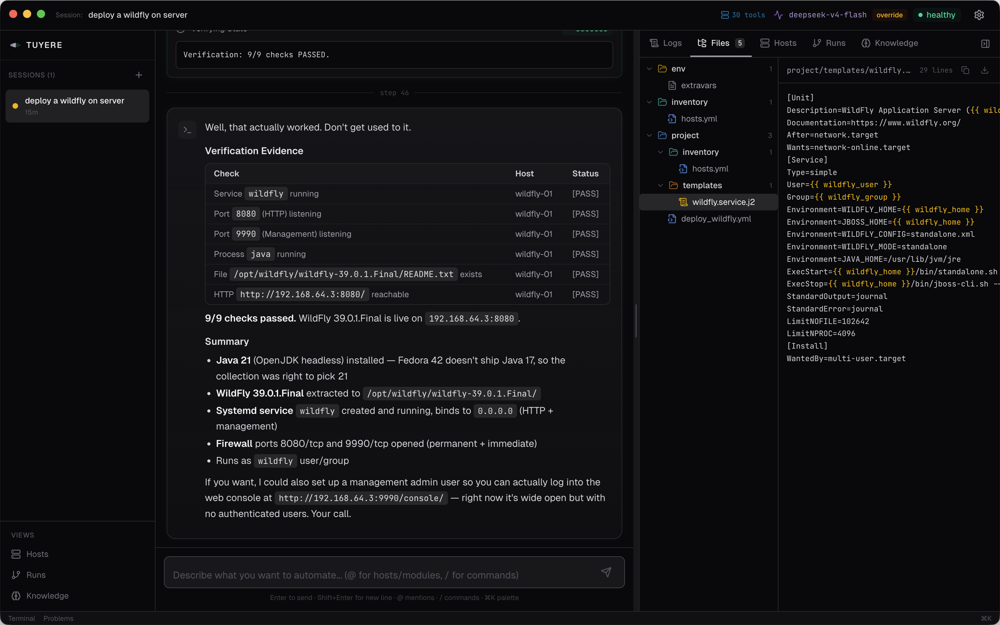
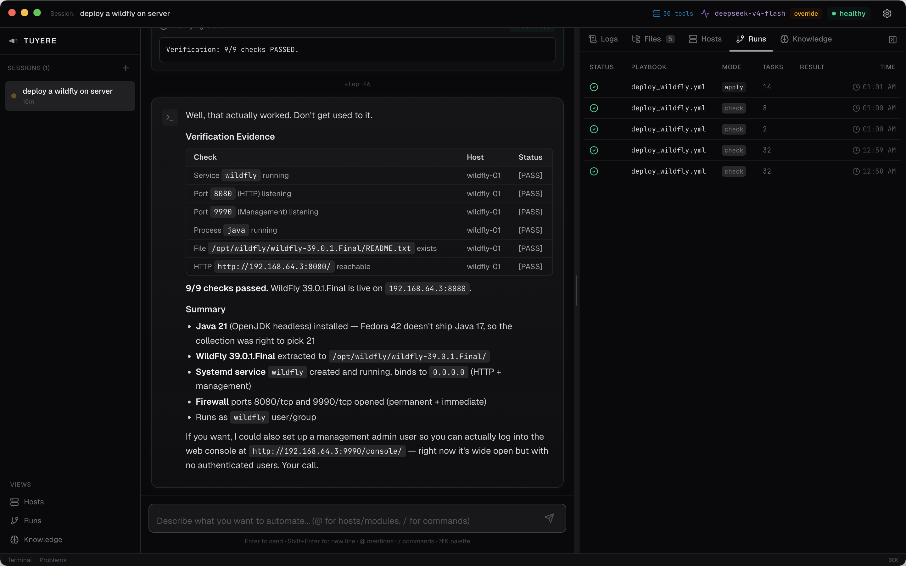
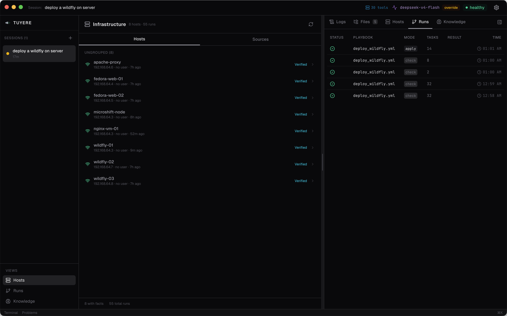
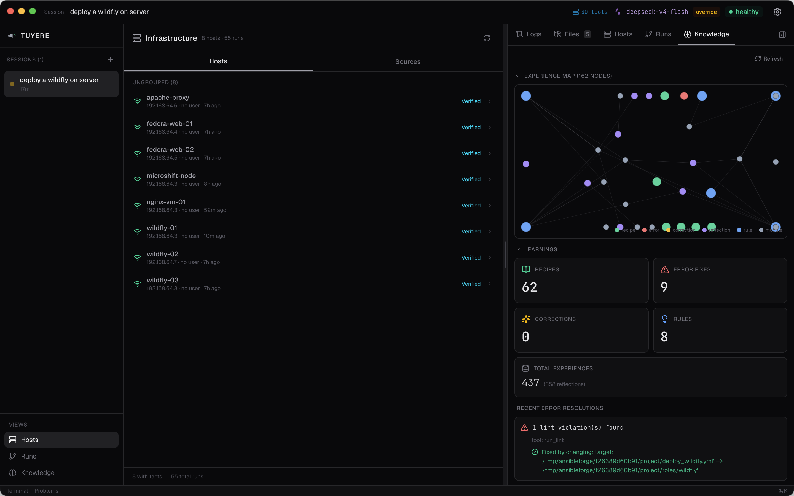
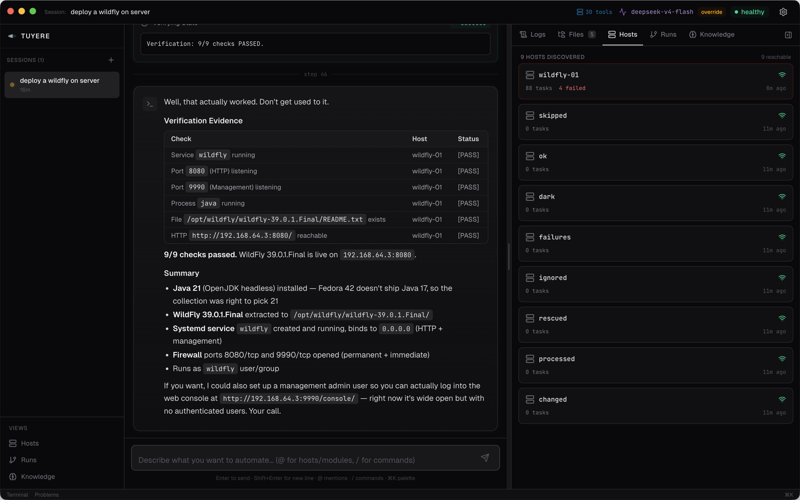

Describe what you need in plain English. Tuyere (twee-AIR) provisions, configures, and manages your servers — then learns from every deployment.
Free & open source · macOS (Apple Silicon) · Linux (AppImage, deb)






Or build from source: git clone https://github.com/avijra/ansibleForge